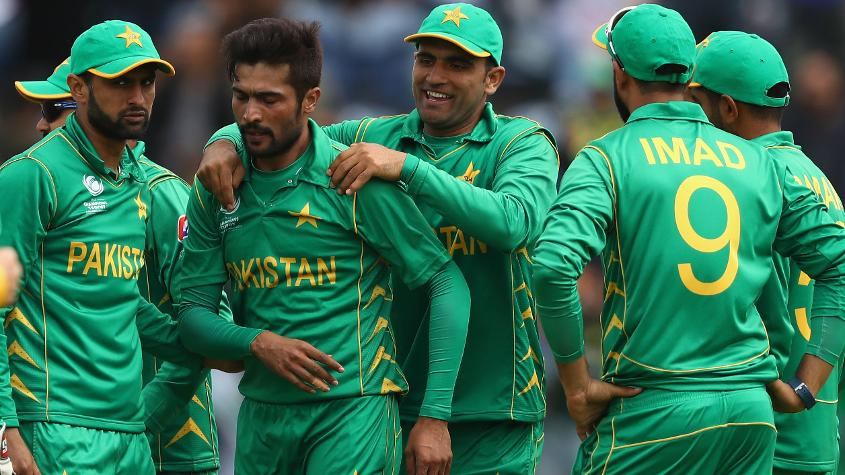
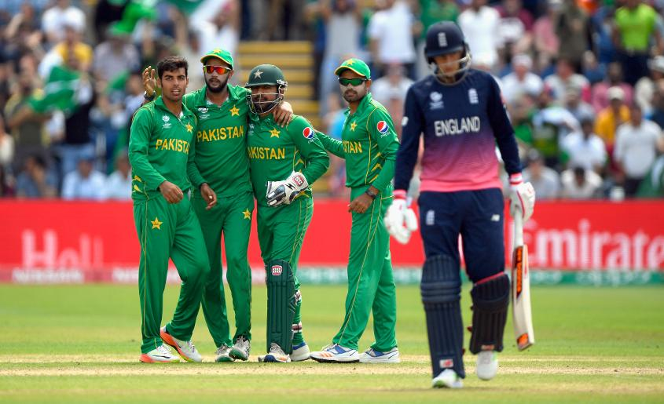

#CT17 Eng v Pak Match Report
#CT17 Eng v Pak Match Report
Bowlers, Fakhar-Azhar knock England out
Home side falters in all departments to go down by eight wickets in one-sided semi-final
A clinical Pakistan stunned England to seal its place in the final of the ICC Champions Trophy 2017 with a comprehensive eight-wicket win in the first semi-final in Cardiff on Wednesday.
England came into the game as the only team with three victories in the league stage, after scoring in excess of 300 in two games and topping Australia with its batting might in the other. But all of that added up to little as it ran into a spirited Pakistan unit, which bowled the home side out for 211 in 49.5 overs.
Its batsmen then did the job in composed fashion in just 37.1 overs, openers Azhar Ali (76) and Fakhar Zaman (57) scoring half-centuries and setting up the chase with a 118-run stand before Babar Azam chipped in with 38 not out and Mohammad Hafeez with an unbeaten 31.
Pakistan suffered a crucial blow on the morning of the game when Mohammad Amir was ruled out with back spasms, but the others in the attack stood up, and how! The pacers were on the money and the spinners choked the run-flow, never letting England get away on a pitch that was tricky for strokeplay; England managed only a modest score despite four of its top five crossing 30, and that told the story.
That Pakistan bowled well was no surprise but the completeness of its performances on the field was impressive. The bowlers were terrific, the fielding top notch, and the batting calm. The captain too had a great day with almost every decision working wonders: Sarfraz Ahmed handed Rumman Raees a debut in place of Amir and he delivered, Shadab Khan was brought in for Faheem Ashraf and he too did his job. Sarfraz was aggressive on the field and, most importantly, was backed up by a fielding unit that raised its level.
The first ten overs of the game were action packed with fortunes swinging rapidly. It started with an ‘umpire’s call’ on an lbw appeal saving Jonny Bairstow by the thinnest of margins in the second ball. Three overs later, Pakistan got an lbw decision in their favour when Raees hit Alex Hales’s pads, but the review by England went against it again. But Raees had his man soon when Hales stepped out and drove straight to cover.
England still got the runs and reached 52 at the end of the first ten. Bairstow got going and enjoyed more luck when he was put down on 42 at slip but couldn’t make use of the fortune, slogging Hasan Ali’s third ball straight to deep mid-wicket after adding just one more run.
Sarfraz then applied the brakes in the middle overs by getting Hafeez to bowl to Eoin Morgan straightaway. The England captain couldn’t get going like he usually does and took 21 balls for his first boundary.